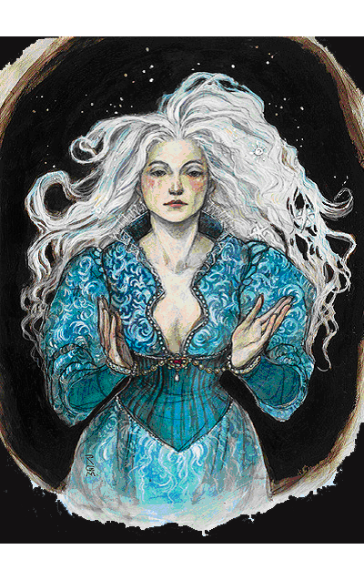
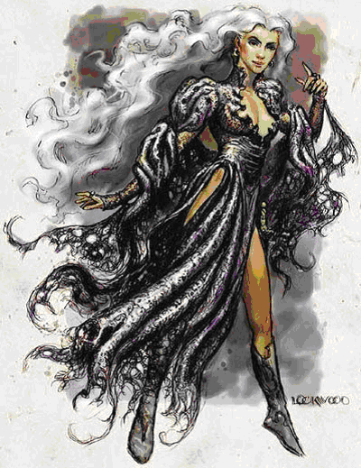

EPIC版

The Simbul欣布
人类女性（密斯特拉的选民）
力量14，敏捷18，体质26，智力20，知觉15，魅力20；
20级巫师/2级大法师/10级法师；总级别32；挑战级别36；
中等体型类人生物（人类）。生命骰20d4+160+2d4+16+10d4+80;生命值336；
优先加权值＋8；
速度30尺；
防护等级31（接触17，措手不及27）；
攻击附加值＋23/＋18近身（1d4+7/19-20，匕首＋5）或＋20/＋16远程接触（通过法术）；
特殊攻击：选择类法术能力；
特殊能力：mastery of elements元素掌握，spell power法力+2，chosen immunities选民免疫力，detect magic魔法探测，enhanced Constitution体质属性提升，silver fire银火；supernatural abilities超自然能力；阵营无序中立；豁免判定：坚忍＋19，反射＋15，意志＋24；
身高5尺10寸。
技能与特技：
Alchemy炼金术＋25，concentration集中精神＋43，diplomacy交际＋11，gather information收集信息+9，heal医护＋14，intimidate胁迫＋17，knowledge(Aglarond history)知识（阿格拉伦德的历史）+25，knowledge(Aglarond local)知识（阿格拉伦德的地域文化）+15，knowledge(arcana)知识（奥术）＋30，knowledge(Rashemen history)知识（雷瑟曼的历史）+15，knowledge(religion)知识（宗教）＋13，scry占卜＋25，search搜寻＋ 15，sense motive察觉动机＋7，spellcraft法术知能＋31，spot察辨＋12，swim游泳＋7；
craft wand制造棍棒，delay spell延迟法术，epic reputation史诗声望，epic spellcraft史诗法术知能,forge ring铸戒，improve counterspell增强抗魔，improved initiative优先改善，leadership(37)领导力（37），maximize spell极效法术，scribe scroll撰写卷轴，skill focus（spellcraft）技能强化（法术知能），skill focus(evocation)法术强化（塑能系），skill focus(transmuration)法术强化（改变系），spellcasting prodigy(sorcerrer)施法天赋（巫师），twin spell法术倍效。
特殊能力说明：
元素掌控：欣布可以将一个法术的伤害形式（火冰酸电）转化为另一种。
法力增长＋2。
选民免疫力：欣布对charm person媚惑人类、circle of death死亡之环、disintegrate湮灭、fear恐惧术、feeblemind痴愚、finger of death死亡之指、fireball火球、magic missle魔法飞弹、misdirection误导和metear swarm流星雨，以及可造成相同效果的攻击完全免疫。
选民类法术能力（均为每日1次）：antimagic field反魔法护罩，delayed blast fireball延时火球，feather fall羽落，fly飞行，hold monster怪物定身术,polymorph other变形他人，prismatic wall陵镜之墙，Simbul's synostodweomer（将已准备好的法术转为医疗术，每法术等级医疗2点生命值），蛛网，施法等级22，基本困难等级＝15+法术等级；
魔法探测（超自然能力）：视野内；
体质属性提升：密斯特拉选民模板使欣布体质＋10；
银火。
超自然能力：欣布拥有以下超自然能力：detect magic侦测魔法(持续存在，效果如同一级同名法术）、protection from evil防护邪恶、protection from spell防御魔法、see invisibility看破隐形、shapechange变形。她同时还拥有所装备的ring of protection+3防护戒指+3和amulet of proof against detection and lacation无法侦测护身符的保护。她可以变形成一道闪电（类似chain lighting连环闪电），速度70ft。她可以维持这种形态10分钟，之后的1d4+2小时内无法再变形。她有时也会使用wish许愿术来移除她准备好的一个法术来为另一个腾出位置。
每日可用巫师法术：4/6/5/4/4/3。基本困难等级＝18＋法术等级，塑能系与改变系法术为20＋法术等级。
每日可用巫师法术：6/8/8/7/7/7/7/5/5/6基本困难等级＝17＋法术等级，塑能系与改变系法术为19＋法术等级。
持有物品：
ring of spell storing(identify鉴定，true seeing真实之视，arcane eye奥术之眼） 法术储存戒指
wand of magic missile（9th 20charges) 魔法飞弹魔杖(9级20发）
bracers of armor+10 防御护腕＋10
ring of shooting stars 坠星之戒
wand of lightning bolt(10th 20charges) 闪电术魔杖（10级20发）
+5dagger 匕首+5
4 potion of cure serious wounds(10th) 4瓶治疗严重伤害药水（10级）
chaos diamond 混乱宝石
staff of passage 通道之杖
阿拉西亚-银手，七姐妹之一，密斯特拉的选民，如今在费伦被人称之为欣布。她是阿格拉伦德Aglarond的王后（被有些人称为“巫术之后”，而另一些则以为这是她的官方头衔之一）并在法术上有着惊人的力量以及与之相称的脾气。
她在很久之前就控制了超魔能力，并以强大的法术连锁独自战胜了攻击泰安Thayan的敌人。卡米拉Cormyr的国王阿佐恩四世Azoun IV称欣布为“友善的朋友，致命的敌人”。现在她是一个有名（或者在你来看，不是那么有名）的法师--阴影谷Shadowdale的伊尔明斯特 Elminster--的爱人。感谢这份爱，她现在已不再那么容易陷入狂飙状态了，这使得她在战斗中更有理智--她仍然无所畏惧，不过不会对她所造成的破坏表现得毫不在意。看起来她对掌握魔法的兴趣仍比费伦上的任何人更大......而且看起来她仍然会照着她的想法去做。
欣布不知疲倦的在泰瑞尔和其他位面之间奔波，从不被日常琐事所纠缠，并总是以意志变形隐藏自己（通常会变为一只黑色乌鸦的形态）。对她自己来说，她从不注意个人形象，常赤脚或只穿着冒险的快靴，裹着一件下摆有些破碎的黑炮（可怜她20的魅力呀--译者注）。她的头发也常常是乱糟糟的（美丽的银发......唔唔唔--译者注）。即使在她的王国阿格拉伦德，人们也畏惧她，避开她，并认为她精神不正常（看见没有，一位魅力20的美女，就因为不注意个人形象，居然落到这个地步，可见佛靠金装人靠衣装真是大实话，还是老E有眼光，一千多岁了还捞了这么大一便宜，实在是老牛吃嫩草，老树发新枝......哪来的杀气--译者注）。红袍法师们早就理解到在战斗中面对欣布的最好选择就是晕倒，在这一点上，他们的判断还算聪明。
frcs版

The Simbul欣布：
人类女性（密斯特拉的选民）
力量14，敏捷18，体质26，智力20，知觉15，魅力20；
20级术士/2级大法师/10级法师；总级别32；挑战级别36；
中等体型类人生物（人类）。生命骰14d4+112+2d4+16+4d4+32;生命值210；
优先加权值＋8；
速度30尺；
防护等级26（接触17，措手不及22）；
攻击附加值＋16/＋11近身（1d4+6/19-20，匕首＋4）或＋14/＋9远程接触（通过法术）；
特殊攻击：选择类法术能力；
特殊能力：archmage high arcana大法师奥术强化，chosen immunities选民免疫力，detect magic魔法探测，enhanced Constitution体质属性提升，epic-level benefits Epic奖励，silver fire银火；supernatural abilities超自然能力；阵营无序中立；
豁免判定：坚忍＋13，反射＋9，意志＋18；
身高5尺10寸。
技能与特技：
Alchemy炼金术＋25，concentration集中精神＋43，diplomacy交际＋7，heal医护＋14，intimidate胁迫＋ 13，knowledge(Aglarond history)知识（阿格拉伦德Aglarond的历史）+15，knowledge(Aglarond local)知识（阿格拉伦德Aglarond的地域文化）+15，knowledge(arcana)知识（奥术）＋31，knowledge (Rashemen history)知识（雷瑟曼Rashemen的历史）+15，knowledge(religion)知识（宗教）＋15，perform表演+10， profession(herbalist)专精（药草学）+12，scry占卜＋25，search搜寻＋15，sense motive察觉动机＋7，spellcraft法术知能＋30，spot察辨＋12，swim游泳＋7；
craft wand制造魔棒，forge ring铸戒，improve counterspell增强抗魔，improved initiative优先改善，leadership(37)领导力（37），scribe scroll撰写卷轴，skill focus（spellcraft）技能强化（法术知能），skill focus(evocation)法术强化（塑能系），skill focus(transmuration)法术强化（改变系），twin spell法术倍效。
特殊攻击：
选民类法术能力（均为每日1次）：antimagic field反魔法护罩，delayed blast fireball延时火球，feather fall羽落，fly飞行，hold monster怪物定身术,polymorph other变形他人，prismatic wall陵镜之墙，Simbul's synostodweomer（将已准备好的法术转为医疗术，每法术等级医疗2点生命值），web蛛网。
特殊能力说明：
大法师奥术强化：法力+2，元素掌控：欣布可以将一个法术的伤害形式（火冰酸电）转化为另一种。
选民免疫力：欣布对charm person媚惑人类、circle of death死亡之环、disintegrate湮灭、fear恐惧术、feeblemind痴愚、finger of death死亡之指、fireball火球、magic missle魔法飞弹、misdirection误导和metear swarm流星雨，以及可造成相同效果的攻击完全免疫。
魔法探测（超自然能力）：视野内。
体质属性提升：密斯特拉选民模板使欣布体质＋10。
Epic奖励：六个术士有效级别和六个法师有效级别。
银火。
超自然能力：欣布拥有以下超自然能力：detect magic侦测魔法(持续存在，效果如同一级同名法术）、protection from evil防护邪恶、protection from spell防御魔法、see invisibility看破隐形、shapechange变形。她同时还拥有所装备的ring of protection+3防护戒指+3和amulet of proof against detection and lacation无法侦测护身符的保护。她可以变形成一道闪电（类似chain lighting连环闪电），速度70ft。她可以维持这种形态10分钟，之后的1d4+2小时内无法再变形。她有时也会使用wish许愿术来获得超过她术士级别所能给予的一个多余9级法术或者移除她准备好的一个法术来为另一个腾出位置。
每日可用术士法术：6/8/8/7/7/7/7/5/5/6。基本困难等级＝18＋法术等级，塑能系与改变系法术为20＋法术等级。
每日可用法师法术：4/6/5/4/4/3。基本困难等级＝17＋法术等级，塑能系与改变系法术为19＋法术等级。
持有物品：
bracers of armor+9 装甲护腕+9
ring of spell storing(identify鉴定，true seeing真实之视，arcane eye奥术之眼） 法术储存戒指
wand of magic missile（9th 20charges) 魔法飞弹魔杖(9级20发）
ring of shooting stars 坠星之戒
wand of lightning bolt(10th 20charges) 闪电术魔杖（10级20发）
+4dagger 匕首+4
4 potion of cure serious wounds(10th) 4瓶治疗严重伤害药水（10级）